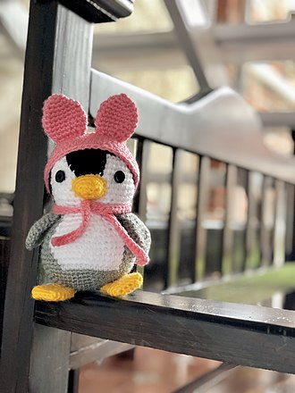
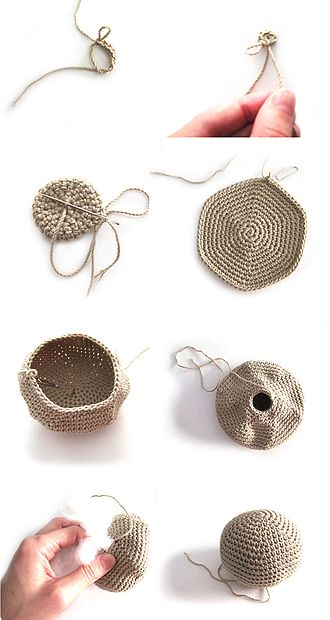

Sobre Entretejidos y los amigurumis.
El término amigurumi (編み包み? lit. peluche tejido), un acrónimo en japonés, compuesto de: ami, "tejido", y nuigurumi, "muñeco de peluche", es una tendencia o moda japonesa que consiste en tejer pequeños muñecos mediante técnicas de croché o ganchillo. Los amigurumis tienen forma principalmente de animales como osos, conejos, gatos o perros, pero también adquieren otras formas como comidas, plantas e incluso accesorios como bolsos, bisutería, etcétera.
Por lo general, los amigurumis se tejen usando lana o hilo de algodón. Estos materiales varían en grosor, color, textura y en composición, que van desde 100 por ciento lana de oveja a la utilización de fibras sintéticas, como el acrílico y spandex en distintos porcentajes.
Para tejerlos, se usan agujas de crochet o ganchillos. El tamaño del ganchillo a utilizar, por lo general, viene sugerido en la etiqueta de la madeja de lana que se empleará para realizar el amigurumi. La relación entre el grosor de la hebra y el ganchillo determinará la tensión del tejido; lo ideal es que el tejido quede lo suficientemente ajustado para que el relleno no sea visible y lo bastante holgado como para que el amigurumi quede suave y siga manteniendo su forma característica de peluche.
Para el relleno de los amigurumis, se usa espuma o fibra siliconada (algodón o pluma sintética) como la que lleva cualquier peluche de relleno. Recientemente, se ha impulsado el uso de rellenos reciclados, como retazos de telas, sobras de estambre, arena o arroz, garbanzos o huesos de frutas y bolitas de unicel. El relleno depende del resultado que se espera, y entonces el amigurumi puede ser más ligero o más pesado, más maleable o más rígido, más pequeño o más grande, etcétera. Para coser las partes que componen el amigurumi, hace falta una aguja de lana (idealmente, una punta roma para no dañar las hebras) e hilo del color de las partes a coser, aunque por lo general es la misma hebra final del tejido la que se utiliza para unir cada parte en su lugar.
Tecnicas de ganchillo en espiral.
Desde que la tendencia DIY (del inglés, Do It Yourself, o hazlo tú mismo) se convirtió en un movimiento mundial, y las habilidades artesanales están de moda, el uso de otros materiales, como hilo para bordar o fibras sintéticas como el fieltro se ha extendido notablemente.
El amigurumi ha impulsado la creación de industrias dedicadas exclusivamente a la venta de insumos para esta artesanía, junto con una amplia variedad de objetos y elementos decorativos fabricados siguiendo los principios y la estética kawaii de los amigurumi. Los artesanos se dedican no solo a fabricar peluches de todo tipo, sino que han incursionado con accesorios, como los broches, collares, pulseras, llaveros y recuerdos, entre otros.
La forma básica y más difundida de los amigurumis es la esfera. Sin embargo, la versatilidad de esta técnica permite crear una infinidad de formas tanto en plano como en volumen, lo que permite que la variedad de diseños sea prácticamente infinita. Son numerosos los patrones que se pueden encontrar buscando bibliografía especializada, sobre todo en japonés e inglés, pese a que la expansión creciente de la popularidad de estos muñecos hace que cada vez sea mayor la oferta lingüística en que se pueden encontrar los tutoriales y ayudas para realizarlos. Sin embargo, hay un movimiento llamado "ganchillo freestyle", que mueve a más y más gente cada vez a realizar sus propios muñecos sin otra ayuda que la de su imaginación.
Si bien el crochet o ganchillo es la técnica más utilizada, también pueden tejerse amigurumis con palillos o dos agujas.
Nuestra Ubicación
Nuestro establecimiento esta ubicado en el corazón de la ciudad
Diferenciales
- Materiales de primera
- diseños inovadores
- Atención personal